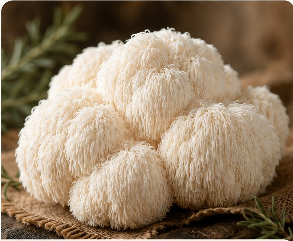

Besin Öne Çıkanları (100 g için, örnek değerler)
◌KaloriDüşük enerji yoğunluğu
⌁ProteinDoğal gıda kaynağı
❧LifDoğal besin lifi
◇Beta-GlukanlarDoğal olarak bulunur
✧MinerallerHasada göre değişebilir
Taze
Aslan Yelesi
Hericium erinaceus
Kendine özgü özel mantarlardan biri olan Aslan Yelesi, lif lif ayrılan narin dokusu ve hafif aromasıyla tavada mühürlenen ya da sebze ağırlıklı tariflerde mükemmel sonuç verir.
✦
Seçkin KaliteTazelik ve doku kriterlerine göre seçilir.
❧
Kendine Özgü LezzetGünlük tariflere farklı bir dokunuş
katar.
♡
Özenle YetiştirilirKüçük partilerde yakından takip
edilir.
⌂
Çiftlikten TazeHasada yakın zamanda paketlenir.
Neden seveceksiniz
- Seçkin mutfak dokusu
- Birçok tarifte kullanılabilir
- Küçük partilerde özenle işlenir
- Tazelik odaklı hasat edilir
Saklama önerileri
Hava alan kâğıt ambalaj içinde buzdolabında saklayın. En iyi
lezzet için tazeyken tüketin.
En iyi dokuyu korumak için saklamadan önce yıkamayın. Pişirmeden
hemen önce nazikçe temizleyin.